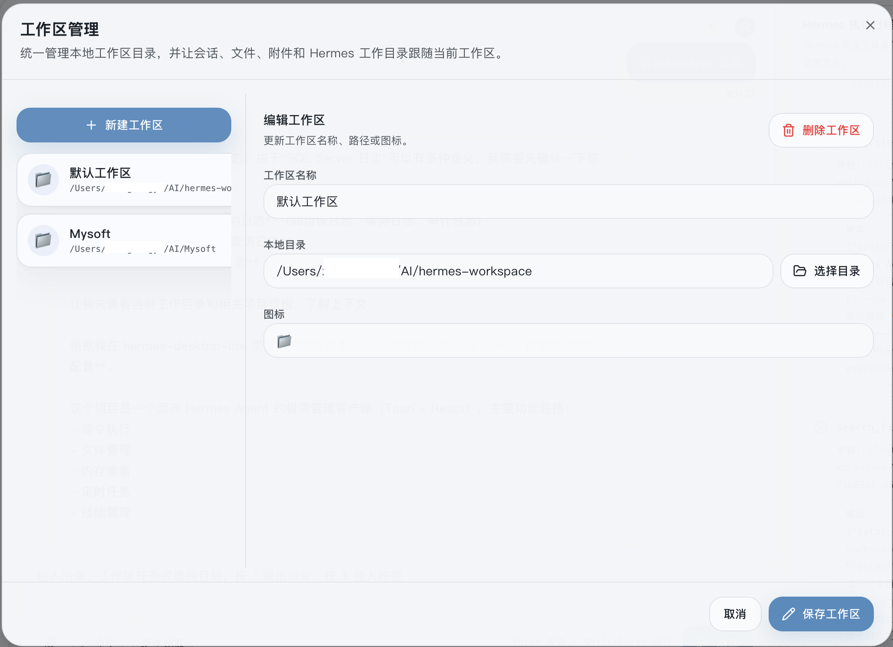
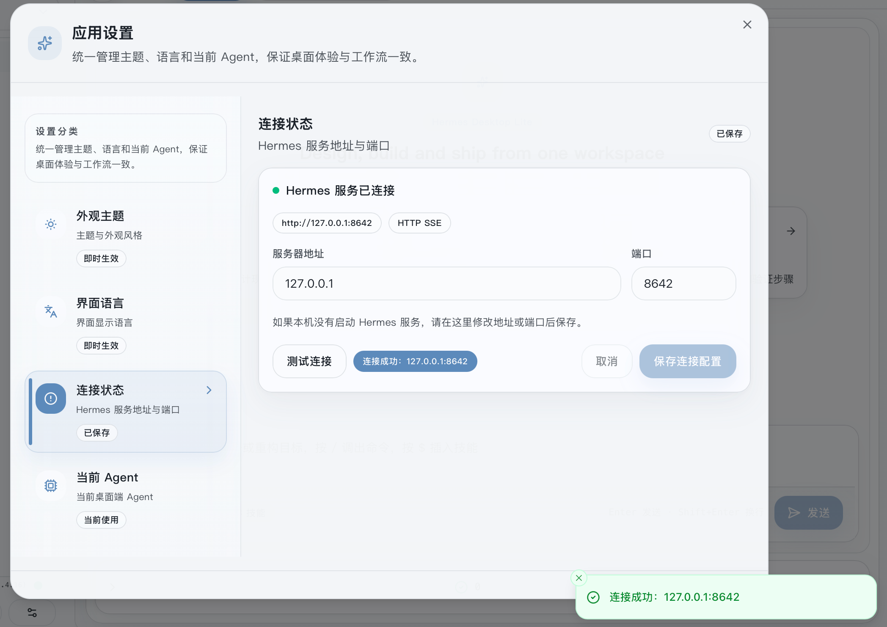
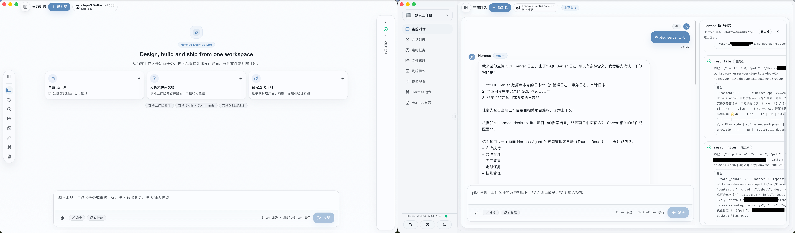
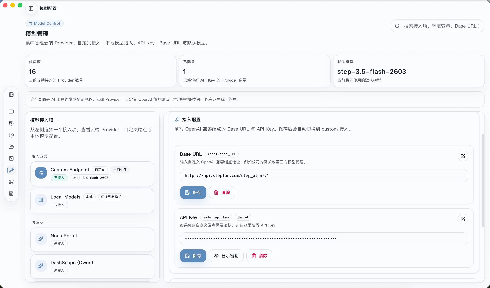
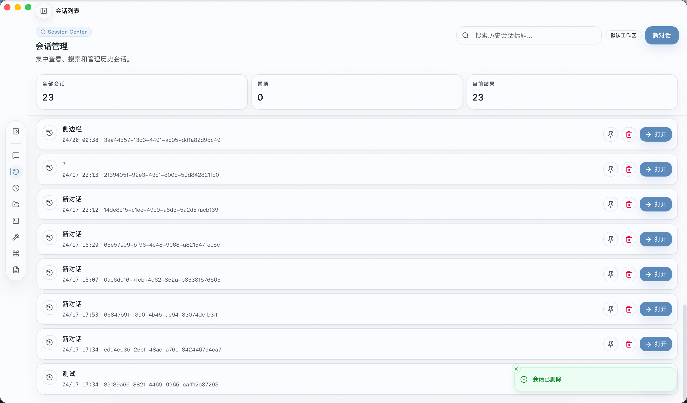
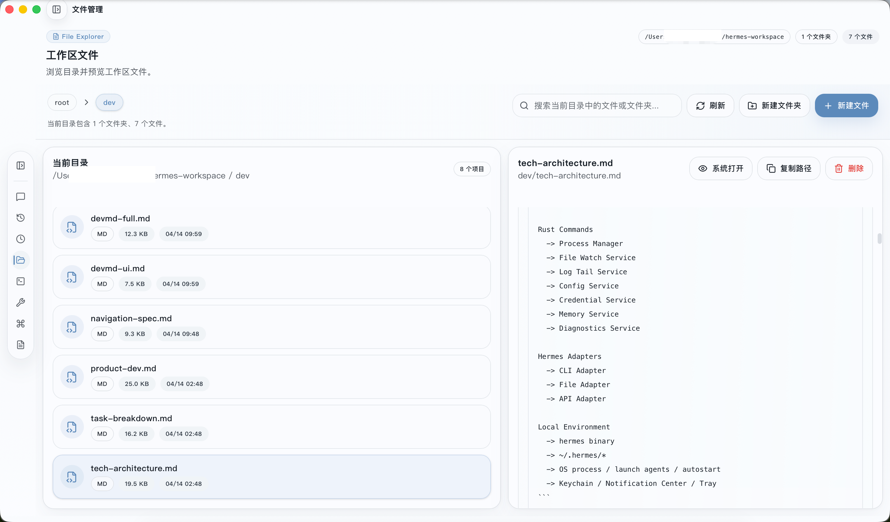
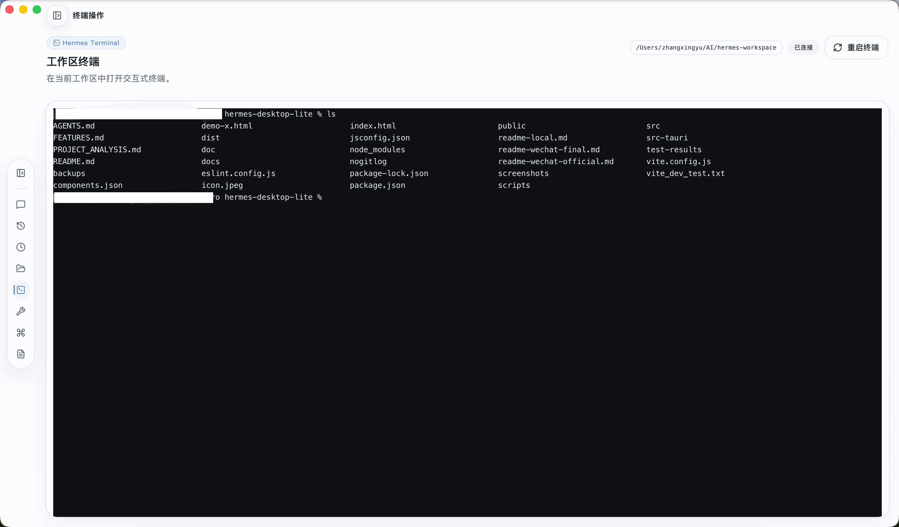
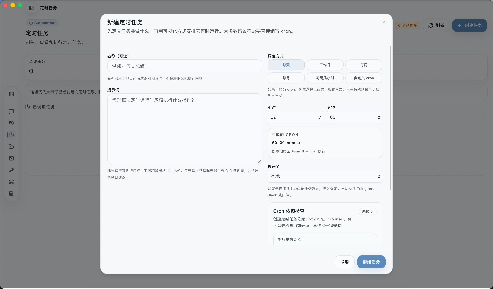
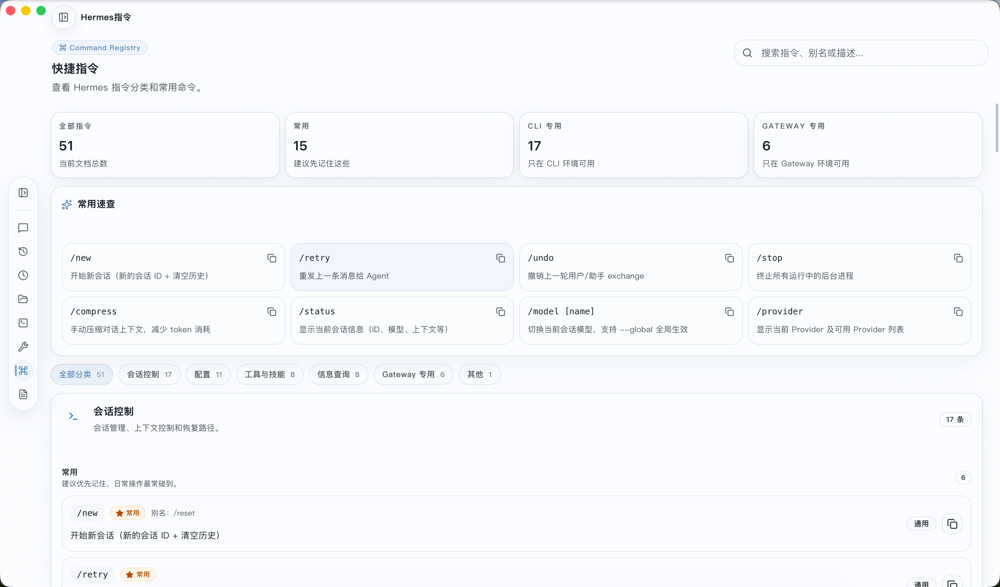
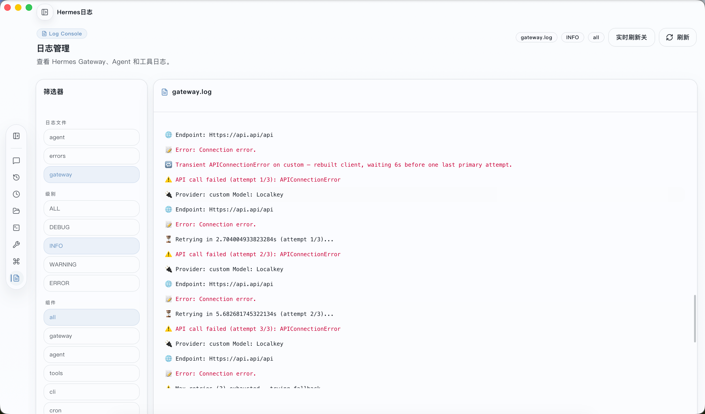

把本地 AI 助手变成 Dock 栏「常用应用」
你在用 Hermes Agent 这个强大的 AI智能体框架时，是不是也和我一样：很少打开 Web Admin 后台，也觉得命令行操作不够直观、不够顺手。
不妨试试一个更适合日常使用的客户端：放在 Dock 栏，点开即用；不用记命令、不用切浏览器，界面干净简单，去掉复杂冗余，回归好用、省事、不折腾。
这就是 Hermes Desktop Lite —— 为日常使用打造的极简桌面客户端。
这是整个应用的设计灵魂。你可以创建多个工作区，每个对应一个本地目录。切换时，所有内容跟着切换：会话列表自动过滤、文件浏览自动定位、终端 cwd 自动切换、任务和记忆按工作区隔离。
相当于为每个项目准备了一个独立沙箱，无需手动 cd/切网页，效率提升。Dock 栏常驻，像使用普通软件一样使用 AI。

工作区管理：一键切换沙箱环境
自定义端口也无需复杂设置，只需在客户端中填入 Hermes Agent 的地址和端口，即可一键连接。

IP 端口设置：简单配置，快速连接
侧边栏 8 个入口，每个都可能会是日常使用到的场景，开箱即用。
流式回复，Markdown 渲染支持代码/表格/公式，工具调用实时可见，附件直接粘贴。
AI 思考过程独立展示——右侧专用面板，不占用对话窗口，推理链清晰可见。
所有历史对话一目了然 · 创建/切换/重命名/删除/置顶/搜索，SQLite 持久化。AI 自动生成摘要，快速回忆上下文。
边聊 AI 边改代码 · 文件树递归浏览，代码高亮预览，Tauri 模式下直接编辑保存，无需切换编辑器。
内置完整终端 · 基于 xterm.js，支持 bash/zsh/sh，交互式 Shell 命令，不用再开 iTerm。
可视化 Cron 管理 · 添加/删除作业，表达式格式提示。
统一管理所有模型 · 本地/远程模型添加、API Key 和 Base URL 配置，右上角下拉菜单快速切换当前模型。
内置命令手册 · 分类浏览（会话管理/配置/工具）、搜索、查看详细用法、一键复制。
实时查看 Agent 运行日志 · 日志流显示、过滤搜索、错误高亮，快速定位问题。

聊天界面 & 菜单展开（对比）

模型选择

会话列表

文件管理

终端操作

定时任务管理 - 任务看板 + Cron 作业

Hermes 指令

Hermes 日志 - 实时日志流查看
Desktop Lite 是日常应用——放在 Dock 栏，点开即用，侧边栏常驻切换无感。告别命令行记忆成本，无需开浏览器。
对话记录存本地 SQLite，文件操作直接读写本地磁盘。没有云服务，没有数据上传，隐私安全。
基于 Tauri，打包体积小，内存占用低，系统原生体验，启动即用。
工作区切换让你无需手动 cd/切网页，效率提升。Dock 栏常驻，像使用普通软件一样使用 AI。
| 如果你… | 那么适合你 |
|---|---|
| 已经在用 Hermes，但很少打开 Web Admin | ✅ 这就是为你做的 |
| 想要一个「点开就用」的本地 AI 客户端 | ✅ 符合预期 |
| 喜欢极简设计，对功能堆砌无感 | ✅ 你会喜欢 |
💬 评论区
有疑问？有想法？欢迎在下方留言，有兴趣试用也可以公众号留邮箱，看到后第一时间发送 🔥